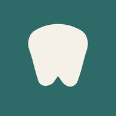

جارٍ تجهيز مساحة الدراسة…
فعّل JavaScript لاستخدام التدريب، أو افتح الدروس من الرابط أعلاه.
اضبط مساحة دراستك كما تحب.
افتح درسًا ثم فعّل الكتابة بالقلم أو الإصبع.
الحفظ على هذا الجهاز. لا توجد مزامنة بين الهاتف والتابلت.